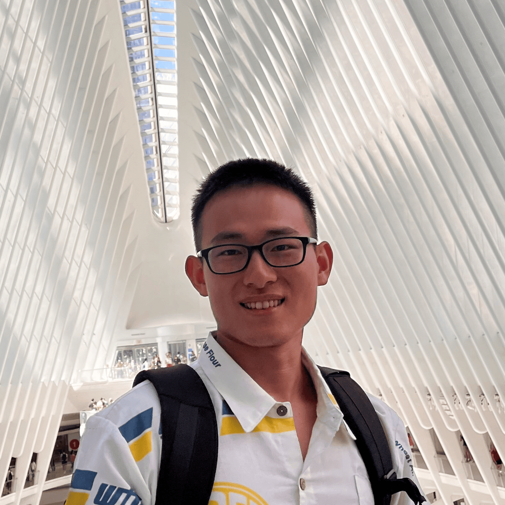
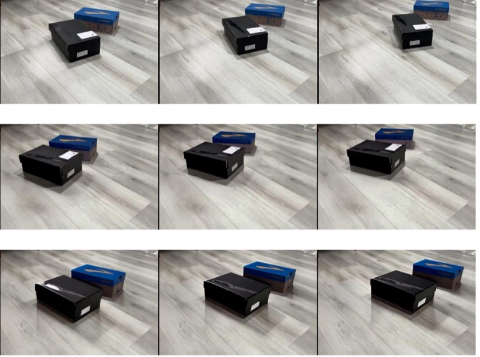
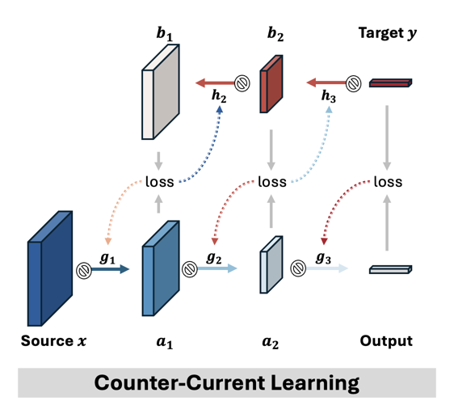
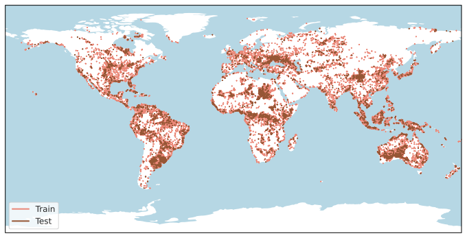
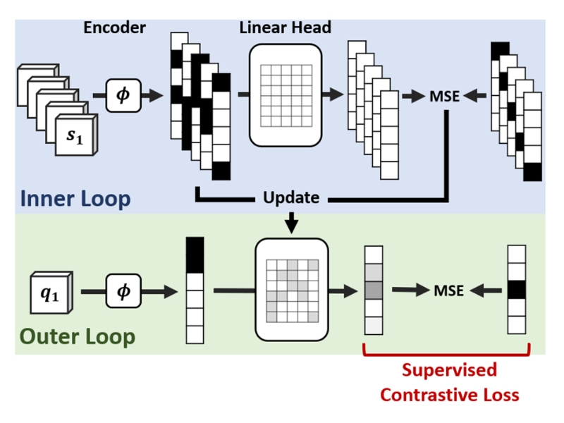

Chia-Hsiang Kao
World Models · Video Generation · LLM Agents
I am a CS PhD candidate at Cornell and a Cornell Foundational AI PhD Fellow, advised by Prof. Bharath Hariharan. I build world models that infer and predict the hidden dynamics of real-world interactions: recovering 3D motion and physics from observation, and generating controllable video.
I am currently a Student Researcher at Meta and was previously an Applied Scientist Intern at Amazon. Before Cornell, I obtained my M.D. in Taiwan.
On the job market: industry research scientist and postdoc positions starting fall 2027.
News
- Sep 2026Preprint: Unifying Video Tasks via Spatiotemporal Analogy.
- 2026Δynamics accepted to CVPR 2026.
- 2026UnivEarth accepted to ACL 2026 Findings.
- Jan 2026Joined Meta in New York as a Student Researcher.
- May 2025Started as an Applied Scientist Intern at Amazon.
- 2025Awarded the Cornell Foundational AI PhD Fellowship.
Selected Research





All publications (11) · * equal contribution
- Unifying Video Tasks via Spatiotemporal Analogy — Under review · paper
- Δynamics: Language-Based Representation for Inferring Rigid-Body Dynamics From Videos — CVPR 2026 · paper
- Towards LLM Agents for Earth Observation — ACL 2026 Findings; ICML 2025 TerraBytes Workshop · paper
- Counter-Current Learning: A Biologically Plausible Dual Network Approach for Deep Learning — NeurIPS 2024 · paper
- AllClear: A Comprehensive Dataset and Benchmark for Cloud Removal in Satellite Imagery* — NeurIPS Datasets and Benchmarks Track 2024 · paper
- Caduceus: Bi-directional Equivariant Long-Range DNA Sequence Modeling — ICML 2024 · paper
- Advancing DNA Language Models: The Genomics Long-Range Benchmark* — AAAI 2023 Workshop; ICLR 2024 MLGenX Workshop
- FedBug: A Bottom-Up Gradual Unfreezing Framework for Federated Learning — Preprint · paper
- MEG-Based Classification and Grad-CAM Visualization for Major Depressive and Bipolar Disorders with Semi-CNN — IEEE EMBC 2022 · paper
- MAML Is a Noisy Contrastive Learner in Classification — ICLR 2022 · paper
- Demystifying T1-MRI to FDG18-PET Image Translation via Representational Similarity — MICCAI 2021
Experience
Awards
Service
Conference reviewer: NeurIPS (2021, 2024–2026), ICLR (2025–2027), ICML (2025), ECCV (2026), COLM (2026), AAAI (2025), AISTATS (2025), AutoML (2022)
Journal reviewer: CVIU (2022), Computers & Electrical Engineering (2024), IEEE TETCI (2024)
Outside Research
Surfing, lifeguard, running, and music.